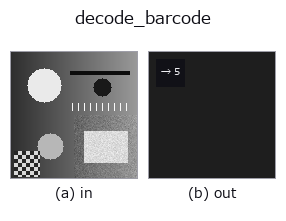

barcode op• 資料種類:image → feature
• 呼叫:fullseye.apply(img, "decode_barcode", a=0.5, b=0.5)(2-D 的模型是一張圖 + 兩個純量旋鈕 a,b∈[0,1])
• HALCON 對應:find_bar_code(其含義與參數可參考 HALCON 手冊)

*圖為在 128×128 合成輸入上實際執行的輸出。左為輸入，右為輸出。點雲以俯視散點顯示(亮度 = z)，一維序列為折線，體資料為沿 z 的最大值投影，影片為中間影格，複數影像為振幅；無法成像的回傳值直接顯示數值。*
掃描旋鈕 a(0.1 / 0.5 / 0.9，另一旋鈕取預設):
▸ decode_barcode: knob a sweep (docs site)
*旋鈕 b 不改變輸出(實測: 0.1 / 0.5 / 0.9 相同)。*
統計中央掃描線上明暗切換次數的簡易條碼風格特徵量。它與 HALCON 的 `find_bar_code`（Detect and read bar code symbols in an image.）貌似而實不同，完全不進行符號體系判定或資料解碼(只是數條碼的「數量」)。
> 以下的詳細說明為原文 —— 摘要與標題已翻譯。
`a が「暗い」とみなすしきい値を 0.3〜0.7 に振る。b は未使用。画像中央の行（v.shape[0]//2）だけを見て、v < しきい値` の画素を 1 とした列に対し、0→1 に立ち上がる回数（暗いバーの本数）を数える。実際のバーコードのデータ（数字・文字列）は得られない。
• gallery2d_physics_alife_3d 族使用指南
• 範例資料目錄(下載 URL / 授權) —— 2-D 用 skimage.data(BSD/公有領域)加合成圖,3-D 給出真實資料源(Stanford/PDS 等)的下載 URL。
• 運算子來歷與參考文獻 —— 該運算子族所依據的研究/方法出處。
• 演算法的正典(作者・年份)與用途見上面的族使用指南。
下面的程式已確認可以執行(與圖相同的輸入)。在 Studio 說明中，此區塊會變成按鈕，可當場載入並執行。
decode_barcode 0.50 0.50
▸ Load this pipeline · Load & run
• gallery2d_physics_alife_3d — py -3.11 examples/gallery2d_physics_alife_3d.py
• poc_barcode_1d — py -3.11 examples/poc_barcode_1d.py
feature 作為輸入)barcode)—
*Provenance: ops.py — 2D 運算子登記表。本條目由 tools/opdocs.py md 自動產生(請勿手動編輯)。*
© 2026 Kazufumi Furuse — Fullseye operator documentation. Licensed under Apache-2.0.
{kind=link}